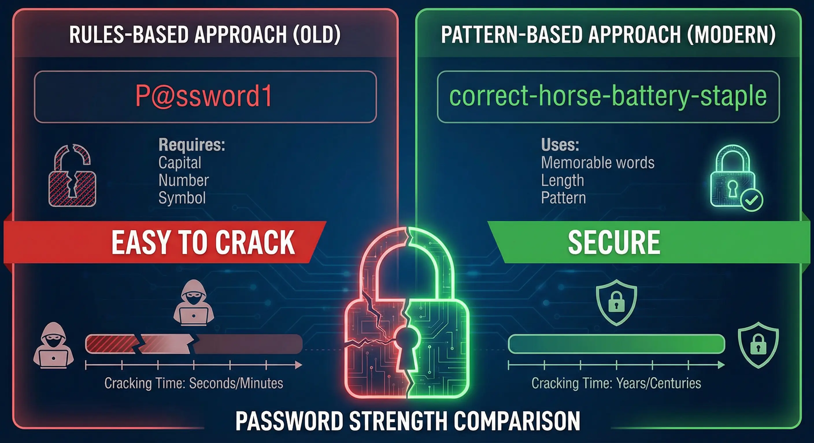
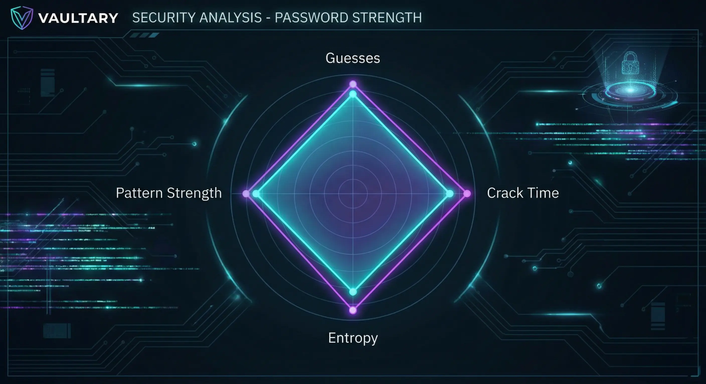
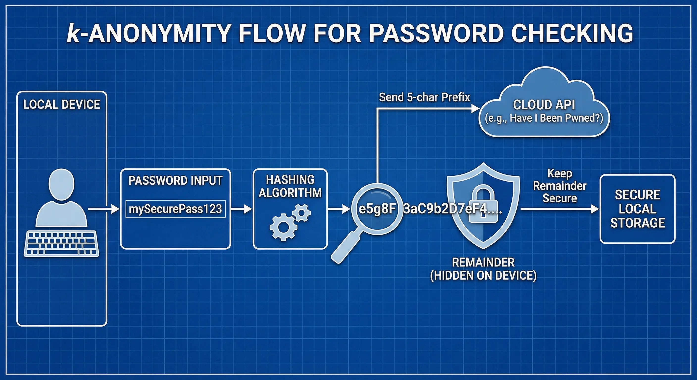
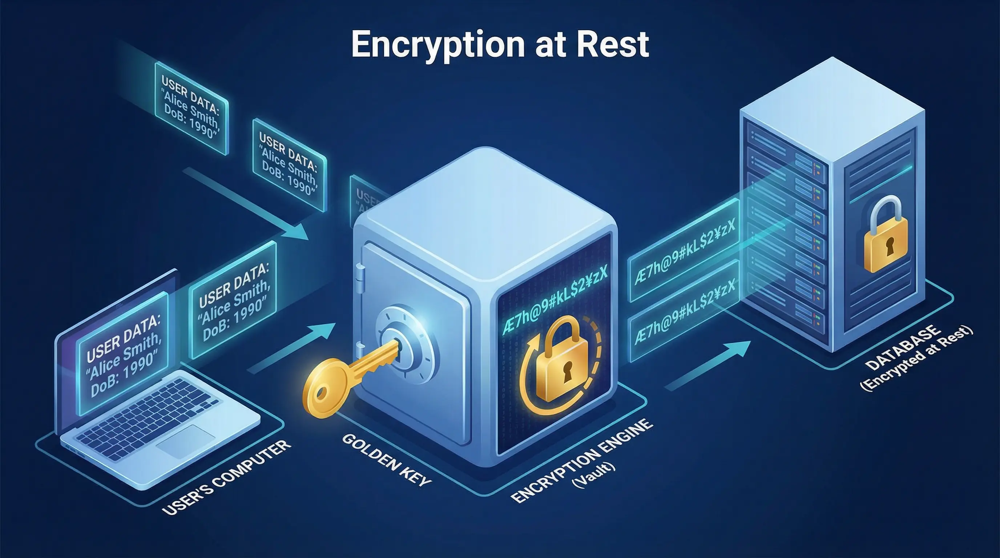

We reuse passwords. We pick "Password123". We forget to update credentials. The human element is always the weakest link in cybersecurity. I built Vaultary to fix this—not just to store passwords, but to teach users why "P@ssword1" is actually terrible and how to do better.
Table of Contents
The Problem with Traditional Checkers
We've all seen the rules: "Must contain 1 uppercase, 1 number, and 1 symbol." The problem? P@ssword1 follows the rules, but a modern cracking rig can guess it in milliseconds. Traditional checkers measure compliance, not security.

Vaultary takes a different approach. I used zxcvbn, a library developed by Dropbox, to estimate realistic strength based on pattern matching and entropy, not just character counts.
Entropy vs. Complexity
Complexity counts characters. Entropy measures randomness. A phrase like correct horse battery staple has high entropy but low complexity (no symbols). It's actually much harder to crack than Tr0ub4dor&3.
In Vaultary, I visualize this using a Radar Chart. It breaks down the score into guesses, crack time, and specific warnings, making the math visible.

Under the Hood: How Zxcvbn Thinks
Most checkers are "dumb"—they just check if you followed the rules. Zxcvbn is different because it tries to crack your password like a hacker would.
It looks for patterns, not just characters:
- Dictionaries: It checks against massive lists of common passwords, names, and pop culture references.
- Spatial Matching: It knows that
qwertyandasdfghare adjacent keys on a keyboard. - Repeats: It detects
aaaaaor12345instantly.
By calculating entropy based on these patterns, it gives a realistic estimate of how long a password would survive an attack.
The Tech Stack
I needed a stack that was secure and responsive. Here's what I chose:
- Backend: Python Flask for its flexibility.
- Database: SQLAlchemy ORM with PostgreSQL for production reliability.
- Security:
bcryptfor hashing andcryptography(Fernet) for vault encryption. - Frontend: Vanilla JavaScript and Chart.js for fast, lightweight visualizations.
Real-Time Breach Detection
Checking if a password has been breached without exposing it is tricky. The solution is k-Anonymity.
Vaultary hashes the password using SHA-1, takes the first 5 characters, and sends only those 5 characters to the HaveIBeenPwned API. The API returns a list of all hashes starting with that prefix. Vaultary then checks locally if the full hash matches. The real password never leaves the server.
import hashlib
import requests
def check_pwned_api(password):
sha1password = hashlib.sha1(password.encode('utf-8')).hexdigest().upper()
first5_char, tail = sha1password[:5], sha1password[5:]
response = requests.get('https://api.pwnedpasswords.com/range/' + first5_char)
# Check if tail is in response text...
return count
Secure Architecture
You can't bolt security on at the end. It has to be the foundation. Here are the principles I applied:
- Encryption at Rest: Vault data is encrypted using AES-256 (Fernet) before it ever touches the database.
- HTTP Security Headers: I implemented HSTS, X-Frame-Options, and CSP to prevent XSS and Clickjacking.
- Rate Limiting: I used Flask-Limiter to stop brute-force attacks on login endpoints.

Designing for Humans: The UX of Security
Security tools are usually intimidating. I wanted Vaultary to be educational, not scary.
Instead of a simple "Weak/Strong" bar, I used a Radar Chart to break down the strength into four dimensions:
- Guesses: The estimated number of attempts needed to crack it.
- Crack Time: How long it would take a computer to guess it.
- Pattern Strength: How predictable the character sequence is.
- Entropy: The raw mathematical randomness.
This feedback loop helps users understand why their password is weak. Seeing "Crack Time" jump from "Instant" to "Centuries" just by adding a second word is a powerful motivator.
Threat Model & Security Boundaries
You can't build an unhackable system. You have to define what you're protecting against. While building Vaultary, I had to be realistic about my threat model.
Vaultary is designed to mitigate:
- Weak password selection through entropy-based analysis
- Use of previously breached credentials via HaveIBeenPwned integration
- Credential exposure at rest through AES-256 encryption
- Basic brute-force attempts via rate limiting
However, I have to be honest about the limitations. Vaultary does not yet implement true zero-knowledge encryption. Because the server currently holds the encryption key, a full server compromise could theoretically expose vault data. This is a known trade-off I made for this version, and moving to client-side decryption is the next major milestone.
From Localhost to Production
It worked on my machine. Production was a different story. Deploying securely introduced several hurdles:
- Environment Variables: Hardcoding API keys is a cardinal sin. I set up
python-dotenvfor local dev and secure environment variables on the host to manage theSECRET_KEY. - Database Migrations: I used Alembic for migrations. Handling schema changes without losing user data required careful planning.
- HTTPS Enforcement: On localhost, HTTP is fine. In production, it's a vulnerability. I configured Flask-Talisman to force HTTPS and set HSTS headers to ensure secure connections.
Engineering Lessons from Vaultary
Building Vaultary shifted my mindset. I stopped thinking about just making features work and started thinking like a defender. I remember staring at my screen at 2 AM, realizing my "secure" token handling was vulnerable to XSS. Those failures were where the real learning happened.
A few key lessons stood out:
- Regex rules are outdated. Attackers exploit patterns and leaked datasets, not just missing symbols.
- Zero-knowledge is hard. Proper key derivation and client-side crypto require careful design. Managing key states without exposing them to the server is a complex challenge.
- Auth systems break at the edges. Logout invalidation and token lifetimes introduce subtle risks I initially overlooked.
- User education is defense. Visual feedback improves understanding. Connecting the technical "why" to the user's "how" is a design challenge in itself.
These insights are directly influencing the next version of Vaultary.
Conclusion
Building Vaultary taught me that security is a trade-off between usability and protection. By leveraging modern tools like zxcvbn and k-Anonymity, we can build systems that are secure without being impossible to use.
Check out the project details page for more info or view the source code on GitHub.
Disclaimer: This article was written and edited by Pranav R. AI tools were used for assistance with drafting and visual assets.